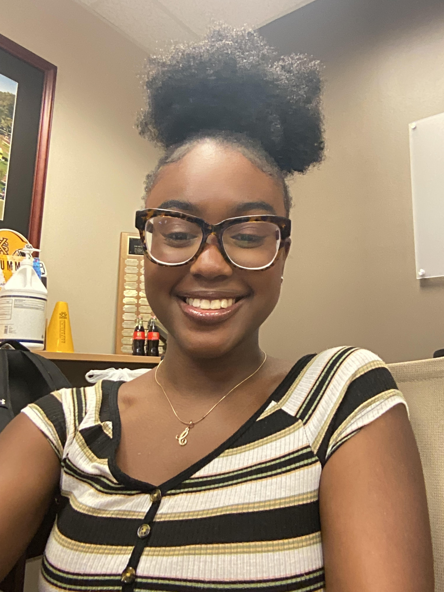

Introduction
I’m Caitlin Johnson, a junior at Kennesaw State University majoring in Information Technology (IT). I absolutely
love building websites and working on computers—there’s something so satisfying about bringing my ideas to
life through code!
Background
Academically, This year I have made a career change. I was once a Computer Science(CS) major before switching
over
to IT. This is my 5th year of college, due to issue with transfering over credits, however, my expected
graduration
date is in the Fall of 2025. Personally,I live in Atlanta, GA my entire, also born and raised as well. My love
for computer came in high school,
however I was planning to be a art major before, my interest in computers.
Experiences
Currently, I have entry-level expereince with working in IT. In 2023, I received a internship
working with "Fulton County Fire Rescue Team", which allowed me to work with real-life firefighters in the field
or
on call and working in the IT department in setting up and optimizing iPad devices with necessary applications
for the firefighters.
Although, I have entry-level experience, I have been working hard developing and processing projects of my own,
and
teaching
myself and gain knowledge and skills in IT.
Goals
My dream is to work with the FBI or CIA, where I can use my skills to make a real impact.
I also have big aspirations for the future: I envision myself living in a chic penthouse in London,
surrounded by all the excitement the city has to offer. I’m determined to chase my dreams and make them a
reality!